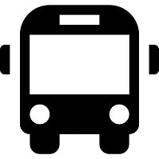

Toggle navigation
Cadê Meu ônibus
Perfil

Buscar Linhas
Todas as linhas
Por geolocalização
Por nome do destino
Por número
Estimativa de tempo
Próxima partida
Nova Linha
Criar nova linha
Novo Usuário
Criar novo usuário
Rastrear
Rastrear uma Linha